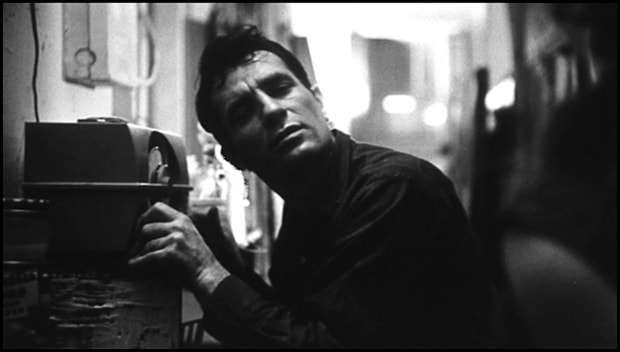

The Tao of Jack Kerouac
December 2016 — Written by Maxwell Stern

The spirituality of the Beat Generation is vast yet disregarded in most literary criticism and theory. Beat poetry, prose, and cultural conscience evolved during the 1940s in New York City and on the West Coast. Post-war era politics and McCarthyism suppressed free expression and the creative life. The very act of being an artist was in and of itself suspect. This left poets like Allen Ginsberg, Gary Snyder, Lawrence Ferlinghetti, Jack Kerouac, and Gregory Corso questioning mainstream American culture and social conformity. Through modes of thought, literary styles, and perspectives, these artists would become known as the Beats: a group of writers interested in changing consciousness and defying conventional writing. Yet underneath the social chaos, the Beat movement was originally a way of life connected to meditation and Eastern thought. This study will focus on the works of Jack Kerouac and his literary associations with Taoist and Buddhist traditions.
The phrase “Beat Generation” arose out of a specific conversation between writers Jack Kerouac and John Clellon Holmes. Kerouac disregarded the idea of the said “Beat Generation”- not meaning to name the generation, but to unname it. Nevertheless, Holmes's celebrated New York Times article, “This is the Beat Generation,” reinforced the movement and early history of the term. He regarded this social and artistic phenomenon as:
"More than mere weariness of being raw … a sort of nakedness of mind, and, ultimately, of soul; a feeling of being reduced to the bedrock of consciousness. In short, it means being undramatically pushed up against the wall of oneself."
Both of the authors' descriptions of the Beat Generation pertain to Taoism. Kerouac's omissive comment of “unnaming” the generation relates to the ineffable comprehension of the Tao. Holmes, too, describes the “Beat way of life,” but does not define it. To speak about the Tao is, in fact, to “tao” it – something that cannot possibly succeed, yet has to be continuously attempted if there is to be a teaching in its name; thus it is spoken about as nameless, formless, and transient. As a Taoist, one must embrace the circumstance and potential of existence by accepting life as it unfolds, but it does not define what the “potential” should be. Instead, it leaves it to each person to decide for themselves how best to fulfill life with their own potential.
The concept of embracing individual potential is expressed in Holmes's account of being “reduced to the bedrock of consciousness,” and “being undramatically pushed up against the wall of oneself.” Similar to the way of the Tao, the Beat way did not have any creeds. All ideas and opinions were abandoned because the Beats were not concerned with beliefs about life, but experience.
"... a sort of nakedness of mind, and, ultimately, of soul; a feeling of being reduced to the bedrock of consciousness."
Most Beat writers focused on the experiences of those who made up the generation. In particular, Jack Kerouac wrote from his life directly, fusing the scenes of his journeys with his own artistic vision and stylistic approach to narrative. Such exploration and spirit were portrayed in Kerouac's novels including On The Road, The Dharma Bums, and Desolation Angels. He moved among bohemian circles in New York and in San Francisco, stopping at every place there was a “sage” who knew something about Eastern philosophy; he listened to the bop musicians in jazz clubs; he lived on a rooftop in Mexico City; he climbed a California mountain with poet Gary Snyder; he spent a solitary summer as a mountain-top fir lookout in Washington; and all the while he traveled on freight trains or buses, hitchhiked, or rode shotgun on the continuous highways of America. Through these adventures, Kerouac taps into the Taoist tradition of living harmoniously with nature by writing in heavy detail about his surroundings:
The mad road, lonely, leading around the bend into the openings of space towards the horizon Wasatch snows promised us in the vision of the West, spine heights at the world’s end, coast of blue Pacific starry night — nobone halfbanana moons sloping in the tangled night sky, the torments of great formations in mist, the huddled invisible insect in the car racing onwards, illuminate.
By explaining these details, Kerouac demonstrates Taoism and Buddhism by trying to balance his life with harmony while being present in the moment. Kerouac also contemplated the Tao sense of Wu Wei ("do nothing") in his texts:
I knew now that my life was a search for peace as an artist, but not only as an artist – As a man of contemplations rather than too many actions … I was to prove that I was able to “do nothing” even in the midst of the most roisterous society that I had come down from the mountain in Washington State to San Francisco.
No man should go through life without once experiencing healthy, even bored solitude in the wilderness, finding himself depending solely on himself and thereby learning his true and hidden strength. Learning for instance, to eat when he’s hungry and sleep when he’s sleepy.
"Kerouac constantly searches for spiritual awareness and enlightenment; his seeking arrives in the form of meditation upon words."
Throughout his works, Kerouac constantly searches for spiritual awareness and enlightenment; his seeking arrives in the form of meditation upon words. Kerouac's literary style, known as Spontaneous Prose, was a literary technique akin to stream of consciousness. The central features of this method were the ideas of breath (borrowed from Jazz and Buddhist meditation breathing) and improvising words over structures of mind and language without edits. The style was also characterized by long sentences that were often separated by dashes instead of periods. As Kerouac wrote in in 1962, “the long dash gives the reader an advance visual signal that the sentence — its length based on breath — would be ending.” In Essentials of Spontaneous Prose, Kerouac explains that he uses the long dash to separate phrases based on breathing, as a jazz musician might phrase a solo. The jazz form enabled Kerouac to experiment with new identities and creative freedoms.
Piano player Thelonious Monk once said, “Make a mistake. Play what you want and let the public pick up.” Kerouac implies this same lesson in the spontaneity of his travels: Everything good happens to him when he has left expertise and comfort behind – when he is pulling themes apart, like a bop soloist, rather than constructing them. In particular, this idea can be applied to the teachings of Zen, Wu wei, and the art of controlled accident. Kerouac is simply writing in action without action, or going with the flow. This philosophy of controlled accident (or Wu wei) captured in Kerouac's Spontaneous Prose suggests a playful, fun, purposeless nature that creates a beautiful harmony. In Desolation Angels, Kerouac instructs a fellow poet Gregory Corso to achieve the best results by writing “without stopping, without thinking, just go, I wanta hear what's in the bottom of your mind.”
Ultimately, Kerouac's prose and linguistic virtuosity embodied the Beat Generation – the pursuit of the American Dream in post-World War II society by several individuals seeking to be unfettered by conformism, materialism, and general social paranoia. Although most readers recognize him as a pop-culture icon who represents youth movements and satiation of the sense with fast cars, jazz, drugs, and the pursuit of kicks, his published work presents a saga of spiritual awakenings explored through Eastern philosophy. Though the lens of Taoism and Buddhism, Kerouac's visionary spontaneity of self challenged the postmodern commercialization of American consciousness.
Works Cited
- Clellon Holmes, John. "This is the Beat Generation" New York Times, 16 Nov. 1952, A1.
- Kerouac, Jack. Visions of Cody (New York: McGraw Hill, 1972), p. 132.
- Kerouac, Jack. Desolation Angels (New York: First Pedigree Printing, 1980), p. 217.
- Kerouac, Jack. Lonesome Traveler (New York: Grove Press, 1970), p. 128.
- Kochmer, Casey. "Personal Tao." Personal Tao.
- Kohn, Livia. The Taoist Experience: An Anthology (New York: State University of New York Press, 1993), p. 11.
- Leland, John. Why Kerouac Matters: The Lessons of On the Road (New York: Viking, 2007), p. 120.
- Theado, Matt. Understanding Jack Kerouac (South Carolina: University of South Carolina Press, 2000), p. 21.
- Waldman, Anne. The Beat Book: Writings from the Beat Generation (Boston: Shambhala, 1999).
- Watts, Alan. Zen and the Beat Way (Boston: Tuttle, 1997).